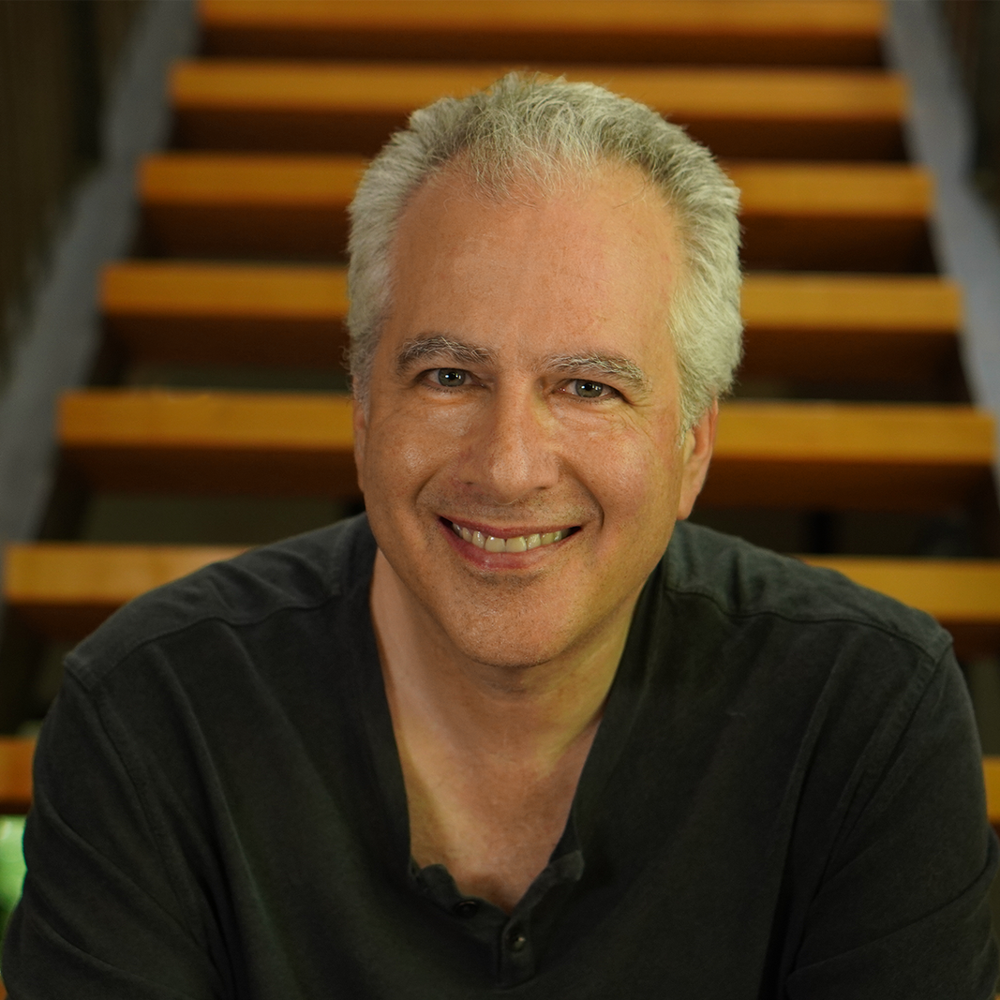

About the founder · David Levine
Thirty Years to
Build One Thing.

I’ve spent more than three decades building internet companies, platforms, and technologies while searching for something that grew ever more elusive: a way to unite purpose, prosperity, and people while protecting, preserving, and revitalizing our planetary ecosystem.
My work began at the birth of the commercial web. I founded one of the first web development companies, presented at the first International Conference on the World Wide Web at CERN in 1994, and wrote one of the earliest books on the Java programming language. Since then, I’ve built and patented technologies for financial markets, massively multiplayer online games, renewable energy, geospatial intelligence, decentralized infrastructure, and agentic AI.
Along the way I found extraordinary mentors, developed powerful platforms, led movements, and worked across government, business, science, media, and civil society—from DARPA and NASA to IBM, Sony, GE, major financial institutions, global brands, nonprofits, and local communities. Each chapter revealed another part of the same problem.
Technology could amplify action, but too often turned human attention, relationships, and behavior into resources to extract, manipulate, and monetize. Economics could create abundance, but too often concentrated its benefits in the hands of a few. Governance could establish authority, but often placed it beyond the reach of the people that lived with its consequences. Culture could create meaning and belonging, but also polarized, alienated, and dehumanized. Each of these disciplines holds an essential part of the answer, but none can address the challenges we face as a society alone.
That journey led to Kinship Duna—the genesis DUNA—and to Kiduna, the agentic software system that supports it. Enabled by the West Virginia DUNA Act, we can now build internet-native organizations with real legal standing, member governance, intelligent allies, and economies designed to help people and ecosystems flourish together.
I’m here as a catalyst, not shareholder, executive, director, or owner. My role is to clarify the initial purpose, assemble the technology and legal foundations, gather the first participants, and help carry the organization into motion. The effort becomes real only when members congregate, govern, create, build, organize, challenge, and make Kiduna their own.
To me, this is not another project or product launch. It is an invitation to co-create the next chapter of civilization itself.
1993–1998
The early web
Founded HuskyLabs, built pioneering public and enterprise web systems, and helped shape the internet’s first commercial era.
1998–2005
Markets and worlds
Created patented financial-market infrastructure and founded a platform for massively multiplayer online games and early cloud computing.
2005–2017
Public purpose and climate
Led technology commercialization and public-sector transformation, then built big-data geomatics systems that made solar energy easier to model and deploy.
2017–today
The agentic organization
Explored blockchain, intelligent infrastructure, governance, culture, and agentic systems—bringing them together right here, right now, in Kiduna AI.
THE FUTURE IS SOMETHING WE DO TOGETHER